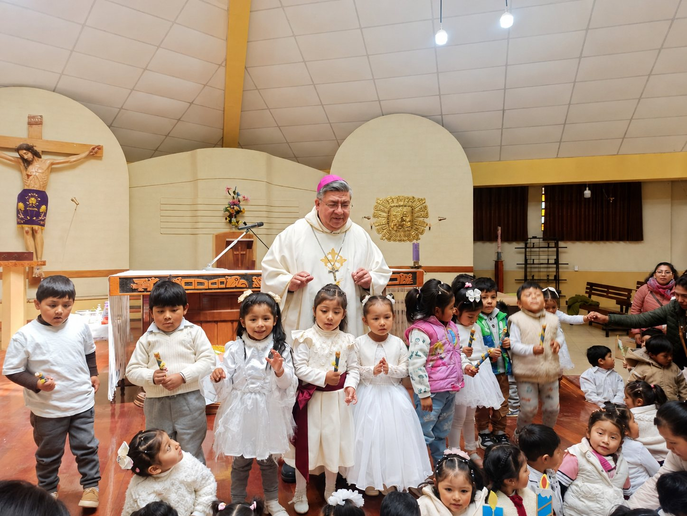

Quiénes somos
Institución al servicio de la primera infancia
Asociación Wawanakan Kusisinapa
La Asociación Wawanakan Kusisinapa es una institución dependiente de la Diócesis de El Alto que trabaja por el bienestar y desarrollo integral de la primera infancia. A través de una red de Centros Infantiles, brinda atención integral a niños y niñas, promoviendo su desarrollo educativo, emocional, nutricional y social en un entorno seguro, inclusivo y basado en valores cristianos.

Conoce más
Áreas institucionales
01
Alcances
Nuestros principales datos de atención y presencia institucional.
02Objetivos
El propósito que guía la defensa, protección y educación integral.
03Valores
Principios que orientan el servicio diario con la niñez y las familias.
04Misión y Visión
Nuestra identidad institucional y mirada de transformación social.